Visualizing Ranges over Time on Mobile Phones: A Task-Based Crowdsourced Evaluation
Matthew Brehmer, Bongshin Lee, Petra Isenberg, and Eun Kyoung ChoeVisualizing Ranges over Time
A pair of quantitative values.
Low and high temperature of one day.
Min and max selling price of a stock in a financial quarter.
Encode as bars or pairs of points.
One quantitative axis and one chronological axis.
How to effectively viualize ranges on mobile phones?
Crowdsourced experiment conducted with 87 crowd workers (MTurk)
Available online: https://aka.ms/ranges (Only viewable in mobile browsers and in portrait mode).
4 Factors in this Experiment
Data Sources
Layout
Granularity
Task
Data Sources
Representation of data generally consumed on phone.
Weather app: A city’s daily high and low temperature.
Sleep tracking app: A person’s sleep schedule of bedtimes and waking times.
For both data source, try to compare observed values with average values.
Temperature Range Data
- Observed Ranges:
Seattle’s daily temperature of 2015 https://www.wunderground.com/ - Average Ranges:
Same day data from https://www.wunderground.com/intellicast
Sleep Duration Range Data
- Semi-synthetic data.
- Observed Ranges:
Posted on Reddit (/r/datasets): https://redd.it/1c1sah
Preprocess to fit the experiment. - Average Ranges:
Based on medical recommendation of 8 hrs sleep each night.
Layout
Linear
Balanced quantitative and scale resolution.
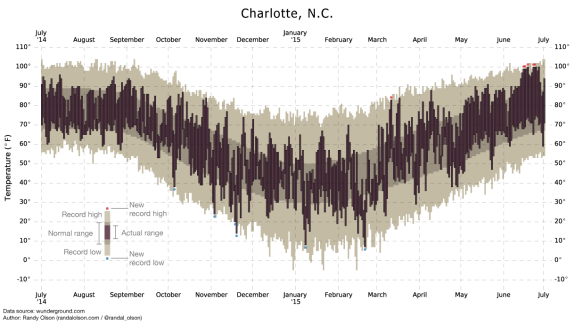Radial
That emphasizes the cyclicality of time and may prioritize discrimination between values at periphery.
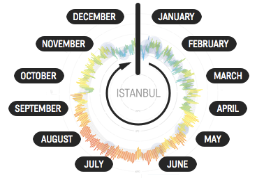Linear Layout
Quantiative scale orthogonal to chronological scale.
Temperature data: Cooler temperatures are lower.
Sleep data: Bedtimes are higher.
Radial Layout
Chronological scale is circumferential and quantitative scale emanates from lower values in the center to higher values at the periphery.
Tradeoffs
Radial Layout's Potential Advantage:
Emphasizes visual continuity reinforcing cycles.
A year's seasonal temperature cycles or weekday/weekend sleep routines.
Radial Layout's Potential Disadvantage:
May suggest continuity where non exists.
Beginning and end of a single month.
Tradeoffs
Radial Layout:
Quantitative scale is compressed to half of the chart width.
Chronological scale is extended at the periphery.
Square charts of 750px x 750px and 12.5% margin:
Linear: Quantitative: 562px; chronological: 562px.
Radial: Quantitaive: half; chronological: 1766px.
Granularity
Existing weather and sleep-tracking apps vary in ranges shown in a chart:
7 days to a month
Upper limit regarding mobile phones?
Experiment with 3 levels of granularity
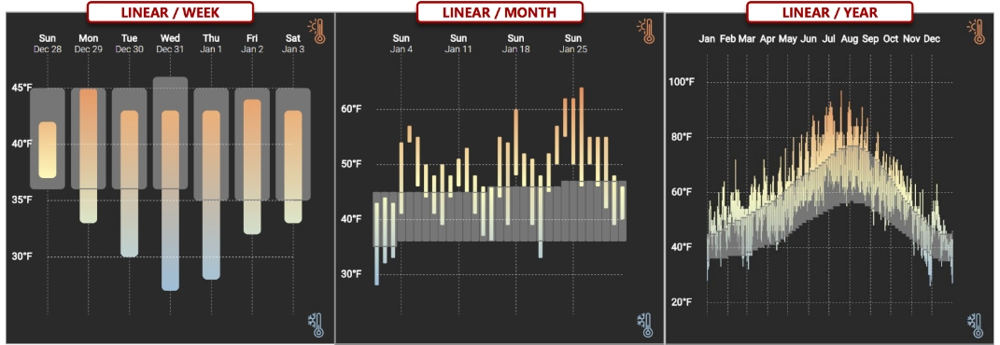Experiment with 3 levels of granularity
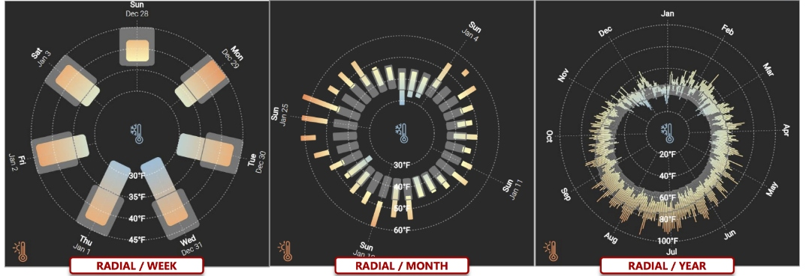Five tasks
Locate Date
Read Value
Locate Min / Max
Compare Values
Compare Ranges
Locate Date
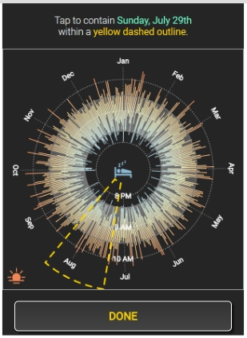Read Value
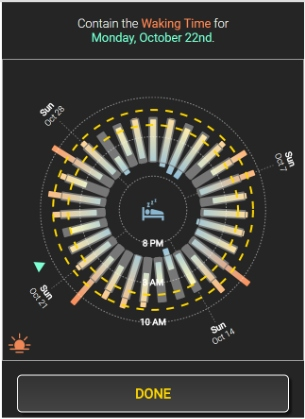Locate Min / Max
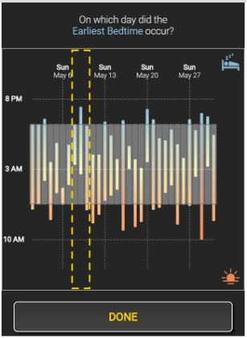Compare Values
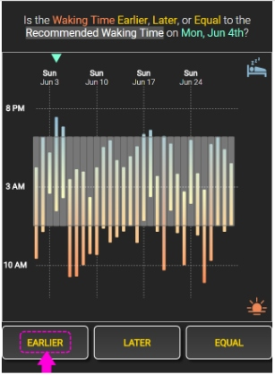Compare Ranges
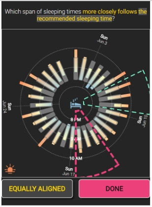Research Questions
Q1 / Layout: How does layout affect performance?
Q2 / Granularity: How does temporal granularity affect performance?
Q3a / Target Range Value: Do participants benefit from increased scale resolution at the periphery of a radial layout?
Q3b / Target Range Value: Does performance degrade from smaller chronological resolution at the center?
Metrics:
Completion Time
Error Rate
Subjective Responses
(Preferred Layout, Confidence rating from 1 to 5)
Results
Three research questions of interest:
Q1 / Layout
Q2 / Granularity
Q3 / Target Range Value
Mean Completion Time
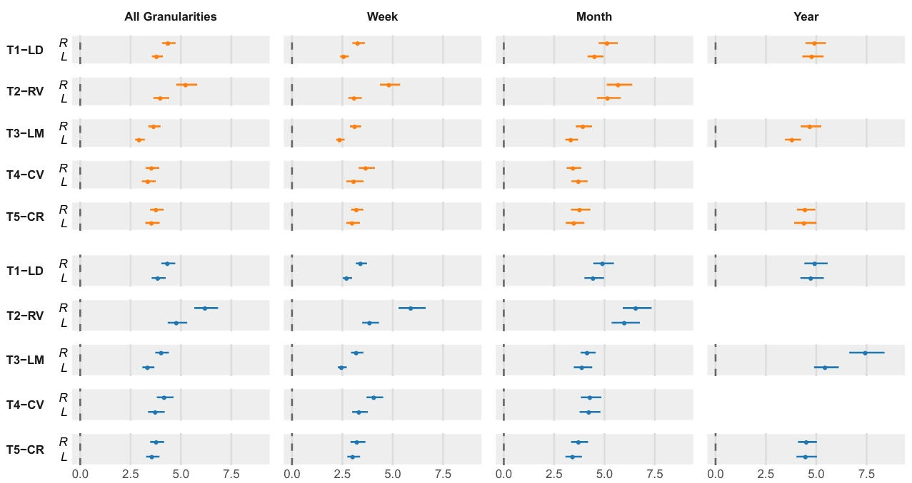Error Rates
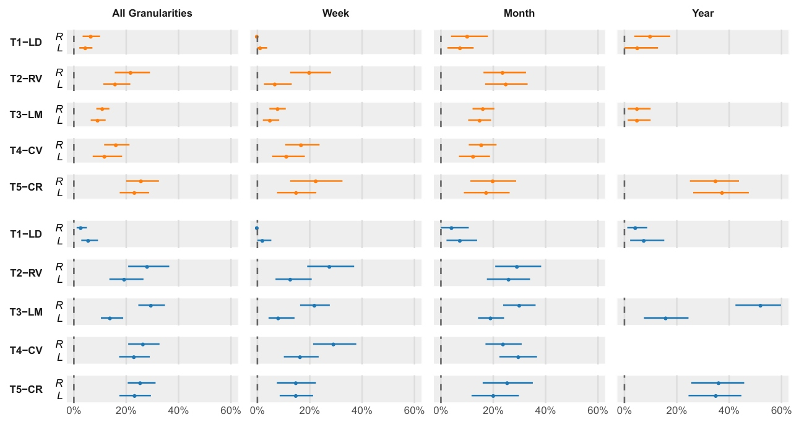Preference: Radial vs Linear
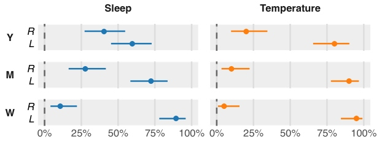Confidence: Radial vs Linear

Radial / Linear Completion Time Ratios
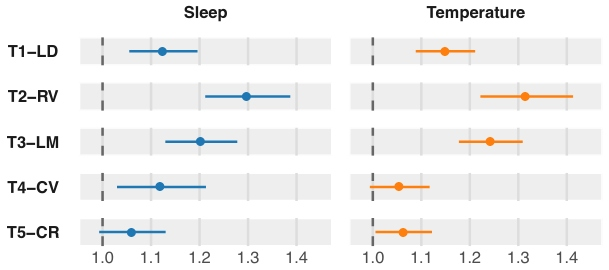 Q1 / Layout: Slower with Radial layout in the first three tasks, especially Read Value.Radial / Linear Completion Time Ratios
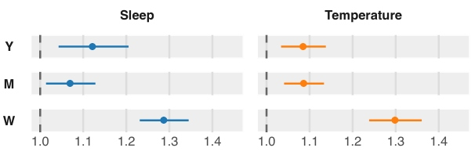 Q1 / Layout: Similar response time in higher granularity.Radial - Linear Error Rate Differences
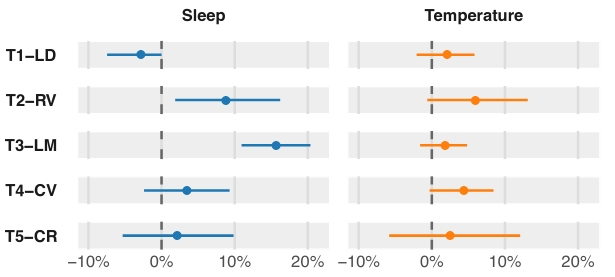Similar in temperature
Less with Radial in Locate Date and high with Radial in Read Value and Locate Min/Max.
Pairwise Completion Time Ratios
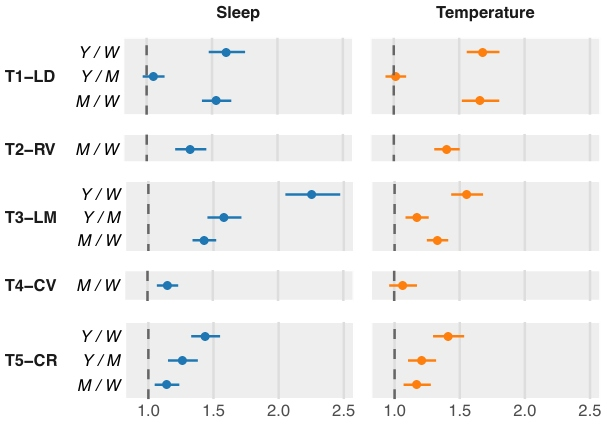 Q2 / Granularity: Slower response in higher granularity, except Y / M in Locate Date task.Pairwise Error Rate Differences
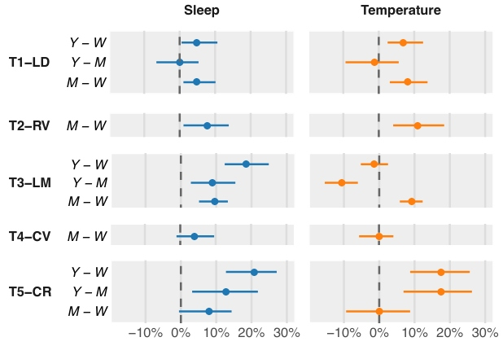 Q2 / Granularity: Higher error rate in higher granularity, except in the first 3 tasks, where increasing beyond Month did not increase error rate.Radial / Linear Completion Time Ratios
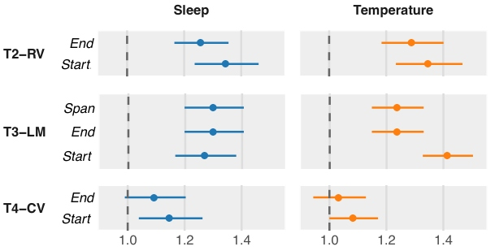 Q3 / Target Range Values: Slower with Radial layouts regardless of the target range, except for Compare Values.Radial - Linear Error Rate Differences
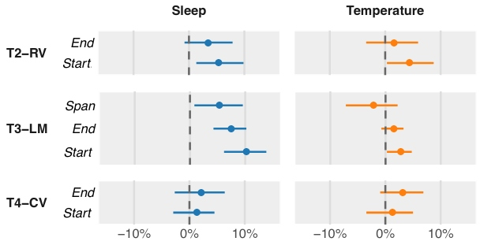 Q3 / Target Range Values: Sleep group: Error is more with Radial layouts in Locate Min/Max task as well as 1% to 10% more errors when reading Start values in Read Value task.Implications
Radial vs Linear Layout
Resurgent interests in Circular Layout, but prospect on mobile phones?
Participants did not prefer range charts with radial layout.
Subjective response reinforced by slower response.
Use case: compare observed range values against average range values.
Similar performance in both layouts.
Use case: locate min/max values reliably.
Radial layout not recommended.
Other use cases not tested in this research.
Radial layout may still be relevant
Identify trend from seasonal patterns over the course of several years.
Implications
How many ranges can you shown on a phone display?
Depends on the data source:
Temperature Ranges:
Year-ranges did not pose difficulty.
In fact, sometimes worse performance with Month-ranges (Unconvectional?)
Sleep Data Ranges:
Performance worsened as granularity increased.
Depends on the type of task:
Compare different ranges:
High number of errors in a year of ranges.
Alternative to showing full year of daily ranges:
Aggregate into weekly or monthly ranges.